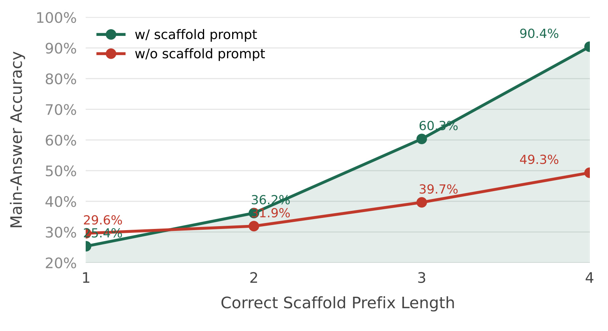
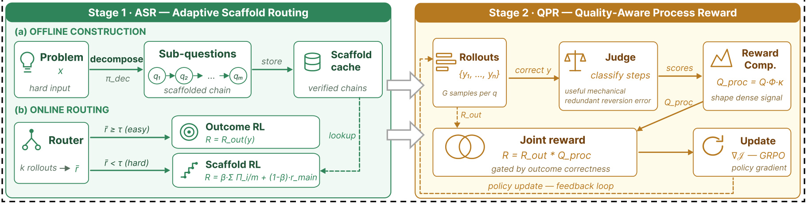
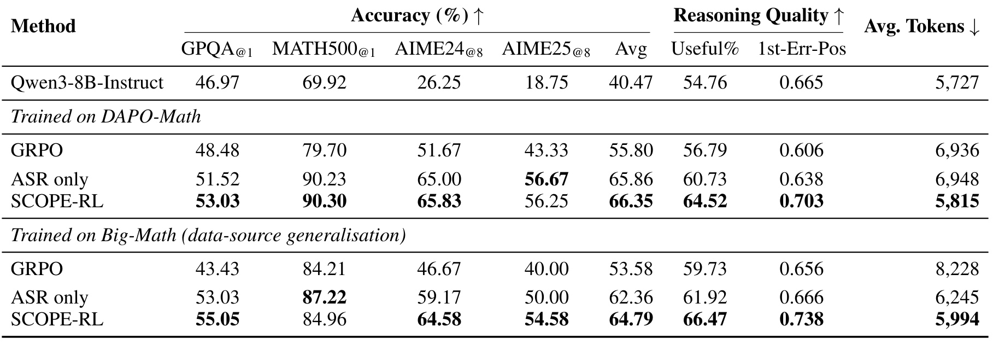
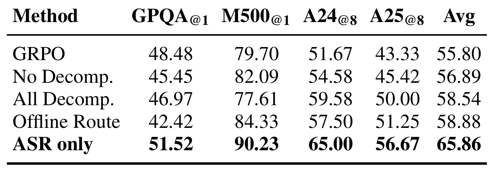
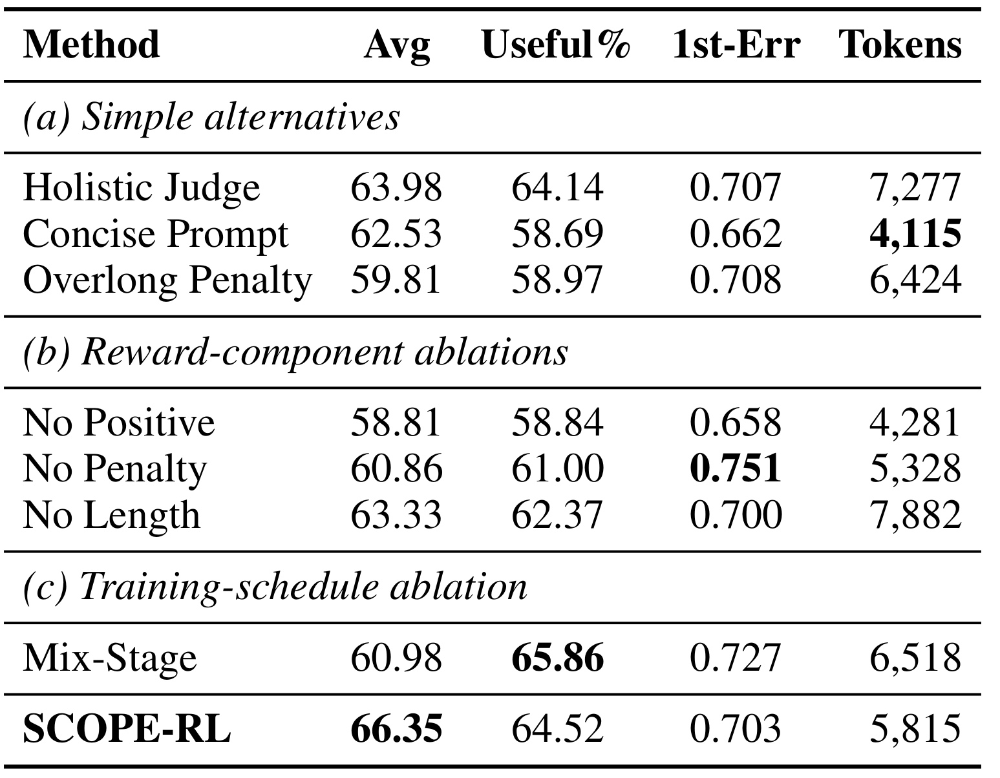
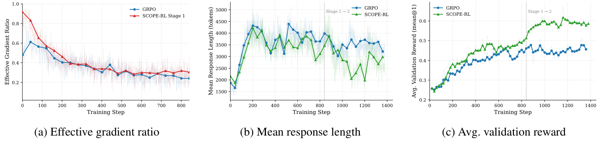
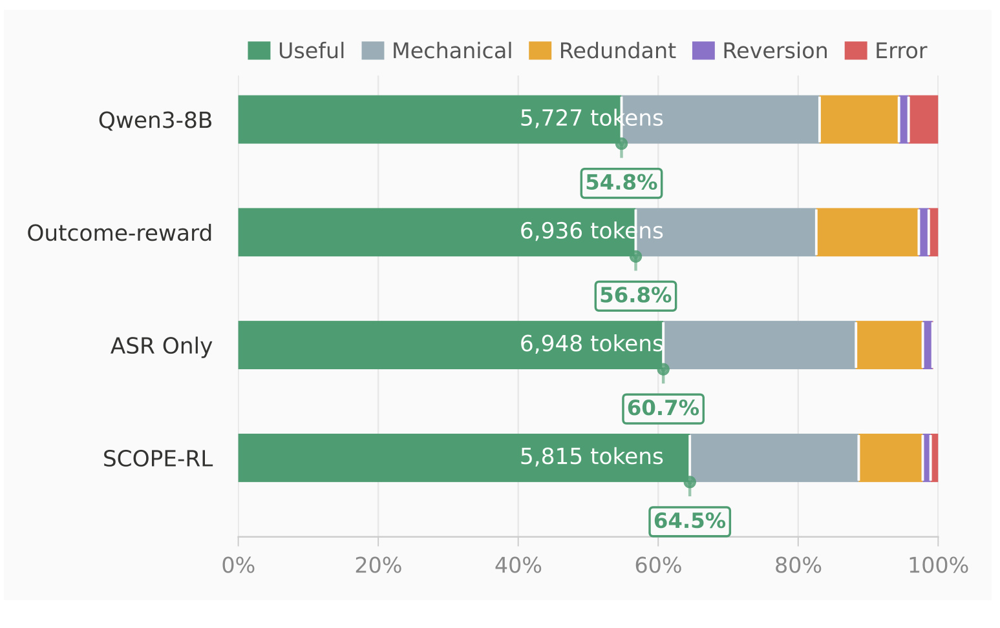
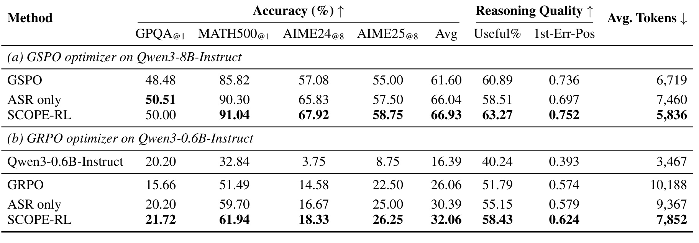

SCOPE-RL：在成功前后优化推理路径
SCOPE-RL 的全名是 Scaffolded Chain Optimization with Process Efficiency，作者包括 Xiaojian Liu、Han Xu、Jianqiang Xia、Zhixuan Li、Ke Xu、Yiwei Dai、Xinran Chen、Changwo Wu 和 Yuchen Li。一作主机构为百度，合作机构为山东大学。论文于 2026 年 7 月 13 日公开，论文入口为 arXiv:2607.11506。作者已公开并核验到 SCOPE-RL 官方代码与数据仓库。这项工作不改 GRPO 的参数更新规则，而是把可验证奖励从“只看终局答案”扩展到成功前的先决进展，以及成功后的过程质量。
稀疏的可验证终局奖励能够可靠判断一条轨迹是否成功，却不会直接评价产生答案的推理路径：在成功前，困难问题上已经完成的先决进展得不到奖励；在成功后，同一个正确性奖励也区分不了组织良好的正确推理与冗余、反复或局部有错的正确推理。
1. 背景和问题
1.1 终局正确不是充分的训练信号
可验证奖励强化学习（RLVR）的吸引力在于，它不需要人工给每一步推理打分，只要用规则检查最终答案是否正确即可。给定问题 $q$、标准答案 $a$ 与模型轨迹 $y$，最常见的奖励就是 $r_{out}(y,a)=\mathbf{1}[\hat a(y)=a]$。这个二值信号很可靠：数学答案相等就给 1，否则给 0；但它也把一条很长的推理路径压成一个端点。两条轨迹只要都错，哪怕一条已经完成三个关键先决步骤而另一条完全跑偏，奖励仍然都是 0；两条轨迹只要都对，哪怕一条直达关键结构而另一条先犯错、再撤回、重复检查，奖励也都是 1。
问题在 GRPO 的组内相对优势计算中会进一步放大。对同一问题采样 $G$ 条轨迹后，奖励要减去组均值并除以组标准差。如果一组轨迹全错或全对，奖励方差为零，标准实现便把这一组的优势设为零。于是，全错的困难题没有“哪条近失轨迹更接近成功”的比较信号，全对的已会题也没有“哪条正确轨迹更干净”的比较信号。论文把能产生非零奖励方差的问题比例称为 effective gradient ratio；SCOPE-RL 的核心不是换一种优化器，而是让更多原本组内常数的问题重新出现可比较的奖励差异。
1.2 成功前：先决进展不可见
作者先做了一个动机探针：选取 755 道都能分成恰好 4 个子问题的题目，以排除链长差异。对同一批题，一种条件给模型完整的有序子问题链和主问题，另一种只给原始问题；两种条件最终都只用同一标准答案检查主问题。随后按模型连续答对的 scaffold 前缀长度 1–4 分箱。若这些子问题只是提示词表面装饰，那么前缀长度不应稳定预示主答案成功；实际结果却显示，正确前缀越长，主答案正确率越高，且在较长前缀处 scaffold 条件与原始条件的差距明显扩大。

Figure 1(a) 的横轴是连续正确的先决子问题数，纵轴是主答案正确率。前缀长度为 1 时，两种提示分别为 25.4% 和 29.6%，scaffold 尚未表现出优势；到长度 2 时变为 36.2% 对 31.9%，到长度 3 时变为 60.3% 对 39.7%，长度 4 时进一步拉开到 90.4% 对 49.3%。这不能直接证明 scaffold 奖励会提升训练结果，因为它仍是 base model 上的相关性探针；但它支持了一个更窄、也更关键的判断：连续完成先决步骤确实携带终局奖励看不到的路径级信息。ASR 所做的，正是把这种信息从分析变量变成规则可验证的训练奖励，而不是让另一个模型主观判断“推理看起来是否接近”。
曲线最左端 scaffold 条件反而略低，也说明作者没有挑出“提示总能帮助”的单向样本；真正出现分离的是连续前缀已经积累之后，这与先决链解释相符。
1.3 成功后：正确轨迹仍可能低效
另一个失真面发生在模型已经会做题之后。论文比较 base model 与 outcome-only GRPO 的终局正确轨迹：GRPO 的平均响应从 5,727 token 增至 6,936 token，而 useful step 比例只从 54.8% 小幅变到 56.8%。这说明正确率驱动的优化会增加找到答案的概率，却不会自动惩罚机械计算、冗余复述、无必要回退或局部错误；更长的轨迹甚至可能成为探索期形成的习惯。直接加长度惩罚也不安全，因为错误的短答案可能比正确的长答案获得更高分，最终把“简洁”变成逃避推理。
因此论文不是用一个统一的 dense reward 同时处理所有样本，而是按成功边界拆成两个阶段：Stage 1 只在当前策略成功率较低的问题上暴露先决进展；Stage 2 只在规则验证已经正确的轨迹上讨论过程形状。这个拆分同时规定了谁有资格得到过程奖励：终局验证器仍拥有否决权，LLM Judge 只能在正确集合内部区分轨迹质量。对大模型后训练而言，这比“让 Judge 同时决定对错和质量”保守；对推荐或搜索式生成系统而言，也对应一种可迁移思路——先用可核验任务目标保证有效性，再在有效集合内优化路径成本与结构，而不是把多个软目标一次性混进不可解释的总分。
2. 方法
2.1 同一稀疏锚点的两阶段耦合
SCOPE-RL 保留 GRPO 的组内优势与策略更新，只改变进入标量奖励的信号。要理解这条边界，必须先写清原始接口：verifier 把整条轨迹压成终局正确性，GRPO 再在同题的多条 rollout 之间做标准化比较；SCOPE-RL 的两个阶段都只替换这里的 $R$，不额外引入 value network，也不改变 policy-gradient 形式。原始终局奖励与组内优势写作：
$$ r_{out}(y,a)=\mathbf{1}[\hat a(y)=a],\qquad A_g=\frac{R(q,y_g)-\operatorname{mean}_j R(q,y_j)}{\operatorname{std}_j R(q,y_j)}. $$符号解释：$q$ 是问题，$a$ 是标准答案，$y_g$ 是同一问题的第 $g$ 条 rollout，$\hat a(y)$ 是从轨迹抽取的最终答案，$R$ 是当前阶段使用的标量奖励，$A_g$ 是 GRPO 的组内相对优势。当所有 $R(q,y_g)$ 相同，论文沿用标准做法令 $A_g=0$。作者进一步用 $\sigma_R^2(q)=\operatorname{Var}_gR(q,y_g)$ 和 $\eta_R=\Pr_{q\sim D}[\sigma_R^2(q)>0]$ 描述单题奖励异质性与全局有效梯度覆盖。两阶段的统一目标，就是不改策略更新的情况下，让成功前和成功后原本方差为零的组重新出现有意义的奖励差异。
Stage 1 的 ASR 从 base policy 出发，在困难题上用 answer-hidden scaffold 提供前缀级可验证奖励，得到 checkpoint $\theta_1$；Stage 2 的 QPR 只从 $\theta_1$ 初始化，重新使用原始、未分解问题，并对终局正确轨迹做过程塑形。二者没有并行混合，阶段之间也不传递缓存轨迹、路由器状态或 Judge 标注，唯一传递的是策略参数。这一顺序很重要：QPR 对错误轨迹返回零，如果在模型几乎无法成功时就启用，它依然没有足够正确样本可供比较；ASR 先提高成功轨迹供给，QPR 才有更密的正确集合可以塑形。

Figure 2 左侧把 ASR 分成离线构造和在线路由。离线 teacher 把问题分成有序子问题，验证后写入 scaffold cache；在线每批先在原始问题上采样，router 根据当前平均正确率决定保留 Outcome RL 还是查缓存、重新 rollout 并使用 Scaffold RL。右侧 QPR 在原始问题上采样，终局正确的轨迹才进入 Judge，Judge 把步骤分成 useful、mechanical、redundant、reversion、error，再组合成过程奖励并送给 GRPO。图中“Joint reward”的乘法门控不能理解为 ASR 与 QPR 同时训练：论文的算法和消融都明确是先 Stage 1、再 Stage 2。部署推理时 scaffold、router 与 Judge 全部移除，模型只接收原始问题。
2.2 Answer-Hidden Scaffold 构造与在线路由
ASR 在训练前为问题 $q$ 构造有序先决链。该链不是把完整解题过程作为示范塞进 prompt，而是把原任务拆成仍可独立用规则检查的中间目标；每个隐藏子答案只进入奖励计算，模型实际接收的只有问题文本。作者用四个谓词同时筛掉不可验证、与主任务无关、依赖断裂和泄漏答案的分解：
$$ S(q)=\{(q_1,a_1),\ldots,(q_m,a_m),(q_{main},a)\}, \qquad \operatorname{Valid}(S)=V(S)\land P(S)\land D(S)\land H(S). $$符号解释：$(q_i,a_i)$ 是第 $i$ 个子问题与只供 verifier 使用的子答案，$q_{main}$ 是最终目标问题；$V$ 要求答案可自动验证，$P$ 要求子问题与先决知识相关，$D$ 要求依赖顺序一致，$H$ 要求答案隐藏、不向 policy 泄漏。训练时模型只看有序子问题和主问题，看不到 $a_i$。作者还人工抽查 200 条 scaffold，报告每条后置子问题都依赖至少一个前置结果；这验证了已生成样本的链完整性，但样本量不足以证明整个缓存不存在细粒度歧义。
每批训练并不无差别使用 scaffold，因为已会题继续接受子问题结构会浪费额外 rollout，并可能让模型依赖显式分解。模型先在原始问题上采样 $G=8$ 条轨迹，用当前策略自己的成功率而非预先冻结的难度标签判定“终局奖励是否仍过于稀疏”；这个判断每个 batch 都会随策略能力更新，计算如下：
$$ \bar r(q)=\frac{1}{G}\sum_{g=1}^{G}r_{out}(y_g,a), \qquad \text{route to scaffold if }\bar r(q)<\tau. $$符号解释：$\bar r(q)$ 是当前策略对该问题的组内平均通过率，$G$ 是 rollout 数，$\tau=0.5$ 是固定路由阈值。若通过率不低于阈值，系统保留原始 rollout 和 outcome reward；若低于阈值，则丢弃该组原始 rollout，查缓存后在 scaffold prompt 上重新生成同样 $G$ 条轨迹。因此 ASR 保持每次更新中参与 loss 的轨迹数与 GRPO 基线一致，但困难组会付出额外的初次探测 rollout 成本。动态路由相对离线难度标签的优势在于，它随策略能力变化：某题学会后会自动退出 scaffold 分支，不再长期占用分解训练接口。
2.3 前缀一致奖励与有效梯度支持
仅把问题分解并不等于获得合理的 credit assignment。如果对每个子答案独立给分，模型可能跳过前置推理、猜中后置答案仍累积奖励；如果只检查主答案，分解又退化成普通提示增强。ASR 因此把“第 $i$ 个节点值得奖励”定义成从链首到该节点全部通过，使奖励结构和先决依赖结构一致。嵌套的前缀一致指示量为：
$$ \Pi_i=\prod_{j=1}^{i}\mathbf{1}[\hat a_j=a_j]. $$符号解释：$\hat a_j$ 是模型对第 $j$ 个子问题的回答，$a_j$ 是隐藏标准答案；只有从第 1 个到第 $i$ 个都正确时 $\Pi_i=1$。由于 $\Pi_1\ge\Pi_2\ge\cdots\ge\Pi_m$，一处先决失败会关闭后续所有前缀信用。它不是要求模型的自然语言过程逐字匹配 teacher，而是只在有序的可验证子答案上建立硬依赖门控。
完整 scaffold 奖励还要同时回答两个问题：连续先决进展占多少权重，以及主答案在什么条件下才算有效成功。论文用 $\beta$ 平衡这两部分，并让完整前缀 $\Pi_m$ 再次门控主答案，随后按在线路由结果在 scaffold reward 与原始 outcome reward 之间二选一。Stage 1 的两个公式为：
$$ R_{ASR}=\beta\frac{1}{m}\sum_{i=1}^{m}\Pi_i +(1-\beta)\Pi_m\mathbf{1}[\hat a_{main}=a], $$ $$ R_1(q,y)= \begin{cases} R_{ASR}(y,S(q)), & \bar r(q)<\tau,\\ r_{out}(y,a), & \bar r(q)\ge\tau. \end{cases} $$符号解释：$m$ 是子问题数，$\beta=0.5$ 平衡前缀进展与最终主答案；$\Pi_m$ 既要求全部子问题通过，也门控主答案奖励。即使模型碰巧猜对 $a$，只要完整先决链未通过，第二项仍不给分。$R_{ASR}$ 被限制在 $[0,1]$，与原始二值奖励同尺度，避免为了两个阶段重新解释 GRPO 的 clip 或 KL 量级。训练直觉是：当一组轨迹都没答对主问题，却在正确前缀长度上有差异时，$R_{ASR}$ 会产生非零方差，从而恢复原 outcome-only 组中缺失的优势信号。代价是信用只沿 teacher 指定的先决链流动；若合法解法依赖不同的中间结构，前缀门控可能低估那条替代路径。
2.4 正确性门控的过程形状奖励
QPR 回到原始问题，从 $\theta_1$ 采样轨迹。规则 verifier 先决定最终答案对错，固定的 GPT-4.1-mini Judge 只对正确轨迹分解原子步骤并标成 useful、mechanical、redundant、reversion、error。门控奖励为：
$$ R_{QPR}(y,a)= \begin{cases} 0, & \hat a(y)\ne a,\\ Q_{process}(y), & \hat a(y)=a. \end{cases} $$符号解释：错误轨迹无论多短、多流畅都只能得到 0；$Q_{process}$ 仅在终局正确集合内部排序过程质量。Judge 不会覆盖 verifier 的结论，也不参与部署推理。这个乘法门控是防止 reward hacking 的第一道边界，不过它仍假设规则答案抽取与 verifier 对等价答案的处理足够稳定。
对含 $N$ 个原子步骤的正确轨迹，作者没有直接让 Judge 输出一个整体偏好分，而是把正向贡献和四种失败形态显式计数。这样，减少机械计算、删除重复、避免无谓回退和修正局部错误会落到不同的可审计分量；长度也只作为对数衰减的软因子，而不是超过阈值就骤然扣分。先计算有用步骤密度、四类低价值比例惩罚和软长度因子：
$$ S_u=\frac{1}{N}\sum_{i=1}^{N}\mathbf{1}[c_i=u],\qquad \Phi=\prod_{k\in\{mec,red,rev,err\}}(1-\lambda_k r_k), $$ $$ \kappa=\frac{1}{1+\alpha\ln(N+1)},\qquad Q_{process}=S_u\cdot\Phi\cdot\kappa. $$符号解释：$c_i$ 是第 $i$ 步类别，$S_u$ 是 useful 比例；$r_k$ 是机械、冗余、回退、错误各类占比，$\lambda_k$ 是其惩罚强度，实验使用 $0.05/0.20/0.25/0.40$；$\alpha=0.5$ 控制对数长度压力，$N$ 是步骤数。所有 $\lambda_k<1$，所以 $\Phi$ 始终为正；$\kappa$ 只随长度缓慢下降。乘法组合意味着“仅仅变短”不能单独提高奖励：如果压缩破坏了有用步骤密度，$S_u$ 会同步下降；如果保留局部错误，$\Phi$ 会施加更强惩罚。 在 outcome-uniform-correct 的组里，只要正确轨迹的过程形状不同，QPR 就能产生 outcome reward 没有的组内方差。
3. 实验结果
3.1 设置、公平口径与评测协议
主实验以 Qwen3-8B-Instruct 为 base，分别从 DAPO-Math 和 Big-Math 各取 2,400 道题训练。Stage 1 使用 ASR，最佳 checkpoint 初始化 Stage 2；outcome-only GRPO 基线使用与两个阶段合计相同的 optimizer budget。两阶段都在单节点 8 张 NVIDIA H800 上运行，训练框架为 verl 0.7.0，rollout 引擎为 vLLM 0.9.2；每题 $G=8$，prompt batch 为 48，最大 prompt 长度 1,024。Stage 1 学习率 $10^{-6}$、60 step 线性 warmup、最大响应 8,192 token；Stage 2 学习率 $5\times10^{-7}$、cosine decay、最大响应 16,384 token。两阶段都关闭 reward-side 与 loss-side KL，entropy coefficient 为 0。
任务覆盖 GPQA、MATH500、AIME 2024、AIME 2025。前两者用单样本准确率，AIME 每题采样 8 次再平均，因此表中的 @1 与 @8 不是同一种方差口径。过程质量诊断使用与训练 Judge 不同的 Gemini-3-flash-preview：它把轨迹解析成原子步骤并打五类标签，但最终正确性始终由规则 checker 决定。1st-Err-Pos 是首个 error 在轨迹中的相对位置，越大表示错误出现得越晚；Avg. Tokens 是生成长度，不等价于端到端 latency、GPU 成本或含 Judge 调用的训练总成本。
3.2 主结果：成功供给与过程压缩的分工随数据源变化
DAPO-Math 上，outcome-only GRPO 的平均准确率为 55.80%，ASR 直接推到 65.86%，完整 SCOPE-RL 再到 66.35%。这说明主要准确率跃升来自成功前的先决奖励；QPR 的价值更多体现在 Useful% 从 60.73% 到 64.52%、1st-Err-Pos 从 0.638 到 0.703，以及 token 从 6,948 降到 5,815。相对 GRPO，最终准确率增加 10.55 个百分点，token 减少约 16.2%。值得注意的是，AIME25@8 上 ASR 的 56.67 略高于最终模型 56.25，说明 QPR 不是每个子任务都继续增准。
Big-Math 上，GRPO、ASR、SCOPE-RL 的平均准确率依次为 53.58%、62.36%、64.79%，对应作者摘要中的最大 +11.21 个百分点；token 则从 8,228 降到 6,245、再到 5,994，相对 GRPO 减少约 27.1%。这里 Stage 1 已承担 24.1% 的大部分压缩，Stage 2 只再压约 4.0%，说明 scaffold 可能同时帮助更快形成结构化解法。MATH500 上完整模型 84.96 低于 ASR 的 87.22，也低于同训练源 GRPO 的 84.21 仅 0.75 个点；因此“平均准确率提升”主要由 GPQA 与 AIME 增益推动，不能解读为每个域都单调改善。

Table 1 最有价值的读法是横向联看四类证据。第一，ASR 在两个训练源都把 Avg 大幅提高，支持它解决成功前稀疏探索；第二，QPR 在两个训练源都把 Useful% 推到最高且把首错位置后移，符合成功后塑形目标；第三，最终 token 都低于 GRPO，但 ASR 的长度变化依训练源而异，说明“分解必然更短”并不成立；第四，各任务列存在局部退化，避免平均数掩盖 trade-off。作者报告的“最多 +11.2pp、最多 -27.1%”分别来自不同训练源的条件结果，它们是可信的表内最大值，却不是同一配置在所有 benchmark 上同时达到的固定收益。
表中还把截断响应统一计为错误，因此 token 下降不能靠提前截断换取；若只是输出更短但未完成，准确率列会同步受罚。这使效率与正确性能够在同一张表内相互约束。
3.3 两阶段消融：不能用静态 scaffold 或单一长度目标替代
Stage 1 消融首先排除“只要分解就行”。No Decomp. 保留动态 sampler 但移除 scaffold reward，Avg 只有 56.89%；All Decomp. 对所有问题一律分解，得到 58.54%；Offline Route 用固定难度标签，得到 58.88%；完整 ASR 达 65.86%。附录的奖励消融进一步显示，只给 scaffold prompt、仍只用 final reward 时为 57.63%，对子答案独立给分为 60.19%，加入前缀一致门控才到 65.86%。这条 55.80→57.63→60.19→65.86 的证据链说明，输入结构、密集子答案与依赖顺序信用都贡献了增益；但论文没有给动态路由与前缀门控的完整二维交叉消融，二者交互强度仍不清楚。

Table 2 还揭示静态难度标签的问题：Offline Route 在 MATH500 上达到 84.33%，却在 GPQA 上只有 42.42%，说明“离线认为困难”与当前策略的真实通过率可能错位。All Decomp. 在 AIME 上比 GRPO 好，却拖累 MATH500，符合对已会题继续加 scaffold 会稀释训练接口的判断。完整 ASR 的四域结果都高于 GRPO，并以 65.86% 平均分领先三个简化版本 6.98–8.97 个百分点。这支持 on-policy 门控是方法的一部分，而不是工程层面的可选省成本技巧。
Stage 2 消融把过程奖励拆得更细。Holistic Judge 把整条轨迹压成一个总分，Avg 63.98%、Useful% 64.14%，看似接近最终模型，却要 7,277 token，且准确率低 2.37 个点；Concise Prompt 只在推理时要求简洁，token 最低 4,115，但 Useful% 降至 58.69、Avg 只有 62.53%；Overlong Penalty 也只有 59.81%。奖励组成中，移除 positive term 后 Avg 降到 58.81，移除 penalty 后首错位置虽达到 0.751，Useful% 却只有 61.00，移除 length factor 则 token 膨胀到 7,882。由此可见三个因子并不互换：正项保护实质进展，惩罚项处理局部低价值内容，长度因子控制无界展开。

Table 3 的 panel (c) 是对整体训练顺序最直接的检验：Mix-Stage 从同一开始阶段混合 ASR/QPR，Useful% 高达 65.86、1st-Err-Pos 0.727，却只有 60.98% Avg，明显低于顺序训练的 66.35%。这意味着单看过程指标甚至会误判混合方案更优；在成功轨迹供给不足时提早塑形，会把训练重心放到少数已正确轨迹，牺牲困难题的探索。SCOPE-RL 的顺序设计因此不是实现偏好，而是由 QPR 的正确性门控决定：先让更多题产生可验证成功，再优化这些成功是如何得到的。
三个 panel 也共同排除了“任何一个单项最优就足够”的解释：No Penalty 的首错位置、Mix-Stage 的 Useful% 和 Concise Prompt 的 token 各自在单列领先，却都没有形成准确率、过程密度与长度三者的联合最优。作者选择完整方案的依据因此是多目标帕累托表现，而非挑选某一列冠军。
3.4 训练动态、步骤组成与 Judge 可信度
训练曲线提供了终点表之外的机制检查。Figure 3(a) 中 ASR 早期 effective gradient ratio 明显高于 GRPO，随后随训练推进逐渐接近，符合“困难题先通过前缀分歧获得信号，学会后退出 scaffold”的预期。Figure 3(b) 中响应长度在 Stage 1 先上升，进入 Stage 2 后明显下降；Figure 3(c) 的验证奖励没有随长度下降而恶化，反而在阶段切换后继续升高。这三条曲线一起支持 QPR 主要压缩低价值步骤，而不是简单截断所有长解。

Figure 3 也需要保守解读。有效梯度比只说明有多少 prompt 的组内奖励方差非零，不说明这些梯度方向一定正确；响应长度曲线存在较大波动，且纵轴是平均 token，不包含 Judge 延迟；验证奖励又与训练过程奖励相关，仍需独立任务准确率约束。它的贡献是把作者的阶段叙事变成可证伪的过程预测：若 ASR 没提升有效梯度、或 QPR 降长度同时验证奖励崩溃，框架解释就站不住。当前曲线与主表、消融方向一致，但不能替代跨模型家族复核。
正确轨迹的步骤组成进一步区分“更短”与“更好”。base model、GRPO、ASR、SCOPE-RL 的 Useful% 依次为 54.8%、56.8%、60.7%、64.5%，平均 token 为 5,727、6,936、6,948、5,815。outcome-only GRPO 增长了长度却几乎没有提高有用密度；ASR 提高密度但仍长；QPR 才同时提高密度和降低总长。作者还在 200 个 GRPO 与 SCOPE-RL 都答对的样本上让三名数学领域专家做成对偏好，多数票在清晰、简洁、非冗余、逻辑连贯、总体质量五个维度分别以 131:69、144:56、138:62、119:81、141:59 偏好 SCOPE-RL。

Figure 4 的绿色区段绝对长度不能只按百分比读：SCOPE-RL 的总 token 从 GRPO 的 6,936 降到 5,815，同时 Useful% 从 56.8% 升到 64.5%，意味着有用内容占比增大且低价值区段被压缩；mechanical 与 redundant 区段的相对收缩与奖励设计相符。细小的 reversion/error 区段仍未消失，也提醒正确答案集合内部仍可能有局部瑕疵。该图只统计终局正确轨迹，因此不能说明错误轨迹质量；专家偏好也刻意限制在双正确样本。它证明的是“正确时更整洁”，不是取代全样本准确率。
Judge 的可靠性是 QPR 的关键风险。评测 Judge 在 50 条 Qwen3-8B 轨迹、约 1,250 个预切分步骤上，与专家共识的 useful/non-useful 二分类 accuracy 为 0.88、Cohen's $\kappa$ 为 0.75；两位专家彼此为 0.90 与 0.79。useful/non-useful 的 F1 为 0.89/0.86，距人类一致性 F1 0.91/0.89 约 0.02–0.03。这支持把 Useful% 当诊断指标，却没有验证四个低价值子类的各自边界；而且训练奖励使用 GPT-4.1-mini，不是这项人类对齐实验里的 Gemini Judge。因此，评测协议的二分类可信度不能自动转化为训练奖励五分类完全可靠。
3.5 优化器后端、模型尺度与高采样覆盖
作者在 GSPO 后端和 Qwen3-0.6B-Instruct 上做了两组复核。GSPO-8B 的平均准确率从 61.60% 经 ASR 到 66.04%，再到完整模型 66.93%；Useful% 最终为 63.27%，token 从 6,719 降到 5,836。0.6B 上，GRPO、ASR、完整模型的 Avg 为 26.06%、30.39%、32.06%，Useful% 为 51.79%、55.15%、58.43%，token 从 10,188 降到 9,367、7,852。结果表明奖励密化不依赖 GRPO 的唯一实现，也不要求 8B 才起效；但两组仍然都属于 Qwen 家族和同类数学/科学任务。

Table 13 避免了只看 Avg 的过度概括。GSPO 下 ASR 的 Useful% 从 baseline 的 60.89% 暂降到 58.51%，1st-Err-Pos 也从 0.736 降至 0.697，直到 QPR 才提高到 63.27% 和 0.752；GPQA@1 最优值又是 ASR 的 50.51，而非最终模型的 50.00。0.6B 上 base model 只用 3,467 token，GRPO 却膨胀到 10,188，SCOPE-RL 的 7,852 仍高于 base；所谓 22.9% 减少是相对 GRPO，不是相对未训练模型。跨优化器和规模的趋势成立，但并非每个局部指标单调。
高采样覆盖还暴露一个不同的边界。AIME 三个子集的 pass@128 中，ASR 均不低于 GRPO，说明 scaffold 没压低 Stage 1 的潜在解题覆盖；完整 SCOPE-RL 在 AIME 2024 和 AIME 2025-II 保持 GRPO 的 90.00% 与 86.67%，却在 AIME 2025-I 从 86.67% 降到 80.00%。这符合 QPR 把概率质量集中到更短、更整洁路径时可能减少解法多样性的解释。若部署目标是小 $k$ 的准确率与成本，完整模型更合适；若系统依赖大规模 sampling 搜索罕见解法，保留 ASR checkpoint 可能是更稳妥的选择。
4. 总结
4.1 我的判断
SCOPE-RL 最扎实的贡献不是“再造一个过程奖励”，而是围绕同一个可验证终局锚点划出两个不同的零方差区：困难题的全错组需要前缀级先决进展，已会题的全对组需要正确性门控的过程异质性。ASR 用规则 verifier 为 answer-hidden 子答案提供信用，QPR 用固定 Judge 在正确集合内塑形，二者都不触碰 GRPO 更新规则。主结果、两阶段消融、训练动态、步骤组成和专家偏好彼此方向一致，使“先扩大成功供给，再优化成功路径”不只是一句框架口号。
对推荐、搜索和 Agent 系统，最值得迁移的是分层目标的思想，而不是直接复制数学 scaffold。可验证的召回命中、工具执行成功、约束满足可以充当硬门；子任务完成、检索证据覆盖可充当成功前进展；在硬门通过后，再用冗余调用、回退次数、无效 token 或重复候选塑造过程成本。这样能避免系统为了省 token 或少调用工具而牺牲任务正确性。不过，推荐任务的“正确答案”往往不唯一，反馈又有延迟和偏差，无法直接套用数学等价 checker，必须先解决 verifier 口径。
4.2 局限与风险
- 模型与任务外推有限。 主实验、GSPO 复核和小模型复核都在 Qwen 家族、数学/科学可验证答案上完成，没有其他模型家族、开放域 Agent 或真实推荐任务。
- Judge 风险没有闭环。 人类验证只覆盖评测 Judge 的 useful/non-useful 二分类，没有覆盖训练 Judge GPT-4.1-mini，也没有分别验证 mechanical、redundant、reversion、error 四类边界。
- 超参数审计不完整。 作者系统扫描了路由阈值 $\tau$，但 $\beta$、$\alpha$ 与四个 $\lambda_k$ 的广泛敏感性仍未给出；不同 Judge 的标签偏差可能与权重耦合。
- 成本口径缺失。 论文给出生成 token，却没有 wall-clock、Judge API 消耗、离线 teacher 分解成本、缓存规模或完整 GPU-hour；Stage 1 还会先做原问题探测，再对困难组重采样。
- Teacher 链可能限制替代解法。 200 条人工抽查支持已生成链的依赖完整性，但前缀门控仍沿指定 scaffold 分配信用，未验证不同合法推理结构是否被公平覆盖。
- 质量与覆盖存在交换。 QPR 在 AIME 2025-I 的 pass@128 下降，说明更整洁的高概率路径可能以削弱高采样解法多样性为代价。
4.3 复现与后续跟进
- 先复现 Stage 1 的信号机制。 在固定 2,400 题设置下记录每题 $\bar r(q)$、路由频率、正确前缀长度和 $\eta_R$，检查收益是否真的来自 outcome-uniform-wrong 组的方差恢复，而不是额外采样量。
- 做完整 reward 网格和替代链测试。 联合扫描 $\tau、\beta、\alpha、\lambda_k$，并为同题生成多条合法 scaffold，比较单链与多链信用能否减少 teacher 路径偏置。
- 把训练 Judge 纳入人类验证。 对 GPT-4.1-mini 的五分类逐类报告 precision、recall、混淆矩阵，并比较开源 Judge；尤其要检查 error 与 reversion 是否稳定，因为它们惩罚权重最高。
- 补齐系统成本。 分开报告离线分解、额外困难组 rollout、Judge 调用、Stage 2 长上下文和部署推理的 GPU-hour、时延、token 与缓存开销，才能判断 16.2%–27.1% 的生成 token 减少是否抵消训练增量。
- 按部署目标选择 checkpoint。 同时报告小 $k$ 准确率、pass@128、过程质量和总成本；若业务需要多样性搜索，ASR 与完整 SCOPE-RL 应作为两个可选 operating point，而不是默认只发布最终 checkpoint。
总体上，SCOPE-RL 给出了一条结构清楚、证据相对闭合的 reward densification 路线：成功前只奖励可验证先决进展，成功后只在正确集合内优化过程。它没有解决开放域 verifier、Judge 偏差或训练总成本问题，却把“终局正确”和“路径质量”之间的空白拆成了可以分别测量、消融和部署权衡的两个阶段。